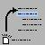

The "Insert Above" function inserts a new subtree (which may be just a leaf or a tree with many layers beneath it) immediately above / before the currently selected subtree in the XML tree. It is activated in the "Edit" menu or by the button

. It presents the user with all legal options for inserting above / before. All subtrees created are filled with default child nodes and values to maintain validity of the XML with respect to the Schema.